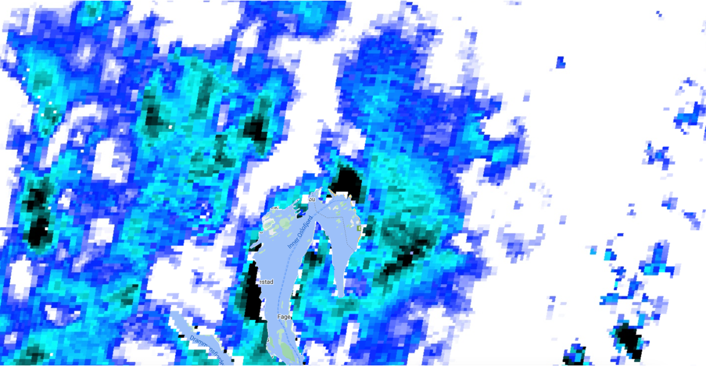
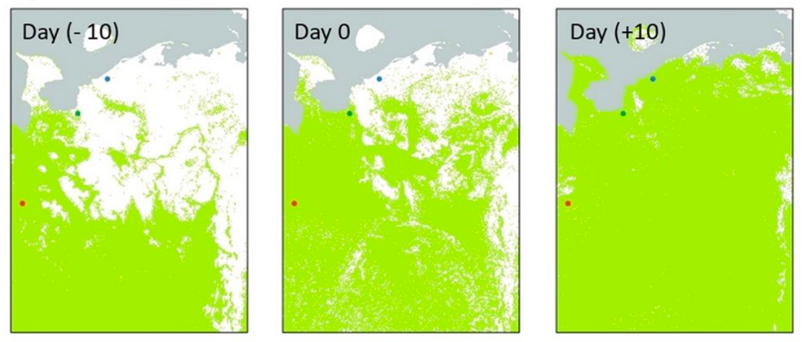

Research gaps in satellite mapping for snow
Contents
Research gaps in satellite mapping for snow#
In this chapter we will:
identify the need for satellite-derived binary snow maps
describe the potential of remote cameras to customize satellite-derived snow maps
present the objectives and next steps for using cameras in tandem with satellites
Motivation#
Remote sensing from satellites enable global and regional snow cover maps where in situ measurements may not be possible (Nolin, 2010). NASA’s Moderate Resolution Imaging Spectroradiometer (MODIS) provides a 500-m, daily product that reports snow ranging from 0 (snow-free) to 100 (completely snow-covered) using the normalized difference snow index (NDSI) and other criteria. NDSI values are based on the high reflectance of snow in the visible band and low reflectance in the near-infrared band.
An example of MODIS image from March 1, 2021 from Oslo, Norway is below.
figure citation: MODIS satellite imagery from Google Earth Engine
The index can provide indication for how much snow cover exists in a region, but the MODIS satellite NDSI index is not adjusted for vegetation cover or other environmental features. Maps of snow cover presence and absence, or “binary snow cover maps,” simplify the algorithm to report where snow is or isn’t. These maps provide information on snow cover that are useful for tracking snow melt and where animals move in relation to snow. For example, by deciding when there is and isn’t snow, binary snow maps can help determine the “snow on” and “snow off” date each season. These dates are useful for hydrology monitoring of snow melt timing as well as the timing of animal migrations. By adjusting for environmental features, they also allow us to compare for snow amounts across different areas.
Below is an example image from Curk et al. 2020 for the presence of the snowy owl (blue dot), rough-legged buzzard (green dot), and peregrine falcon (red dot) in relation to snow presence (white background) and snow absence (green background) on three separate days in May 2016 in the Arctic. The authors used MODIS imagery for the snow data, using 50% as the cut-off for snow (>50%) or no-snow (<50%). While we won’t go into it for this tutorial, the researchers modelled how wildlife spring migration timing changed in response to changes in snowmelt.
figure source: Curk et al. 2020
Earlier MODIS products included binary snow-covered maps, categorizing pixels as “snow” if the NDSI was >40. Later, MODIS snow products included a binary map that categorized a pixel as “snow” if any pixel within an 8-day period had an NDSI value >10 (Hall et al., 2002). The lower threshold increased snow detection but at the cost of increased false positives. Now, the threshold for snow presence is considered region dependent (Thapa et al., 2019; Zhang et al., 2019), and the end-user is recommended to determine the threshold above which the corresponding pixel should be identified as snow covered based on the needs of the study and the environmental landscape. However, there is no consensus for how to determine the best threshold to create binary snow maps a region. Given the utility of binary snow products for monitoring snow phenology and subsequent applicability to wildlife studies, more work is needed to develop daily binary snow maps for specific regions.
Cameras as the solution#
We will show how we can use cameras deployed in remote locations for wildlife monitoring, often referred to as “camera traps,” to provide the ground-based snow information to customize satellite maps. Below is a picture of a camera trap (left) and an example image that shows snow cover on the ground (right). We will be using a camera trap network based in Norway managed by the Norwegian Institute for Nature Research (NINA).

figure source: (left) camera trap as part of ScandCam network (photo credit: Catherine Breen), and (right) roe deer from ScandCam dataset.
Objectives#
We will complete the following three objectives in this tutorial:
Identify snow and no snow in wildlife camera trap images
Conduct an Return Operating Curve Analysis to determine best satellite threshold
Create binary snow map using custom threshold
Next, we will prepare the camera trap and satellite dataset.